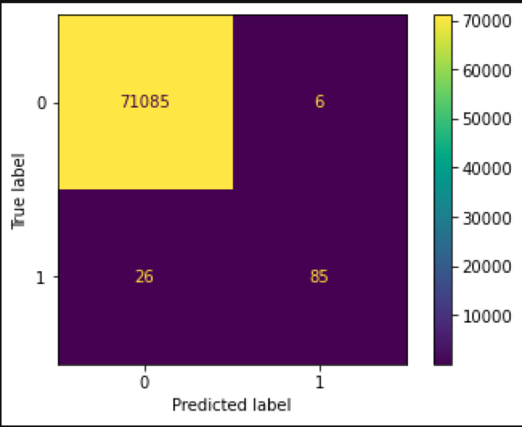

Credit card fraud is a persistent issue and one that credit card companies and banks constantly
need to consider. Many banks and credit card companies offer free monitoring and alerts in an
attempt to identify potentially fraudulent activity as soon as possible. With the standard
practice of reimbursing customers for fraudulent charges on their credit cards and accounts,
it is in the best interest of credit card companies and banks to identify, stop and prevent
fraudulent activity.
ETL Process
Data was downloaded from Kaggle. Initial cleanup and transformation was done in Colab.
Amazon RDS was used to store the data. The data set contains 284,807 credit card transactions.
Challenge
Data was highly imbalanced. There were only 0.17% fraud transactions in the data set.
Any model that always predict 'non-fraud' will be accurate at 99.83% of the time.
Solution
We resampled the data to have equal number of fraud and non-fraud transactions.
Also several models were tried and the performance was compared based on the
precision/recall values.
Models
K-Nearest Neighbour
Logistic
Simple Neural Network
Deep Neural Network
Support Vector Machines
Random Forest
Best Model
The best model was found to be the Random Forest Model. This model can predict
fraud transacrtions at a 93% precision.

Confusion Matrix -'1' represents fraud transactions
Used: Colab, Amazon RDS, PySpark,sklern, TensorFlow, Keras, PostgreSQL
Github: https://github.com/lumindak/Credit-Card-Fraud-Detection-Project